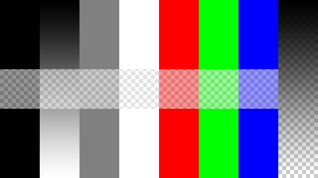
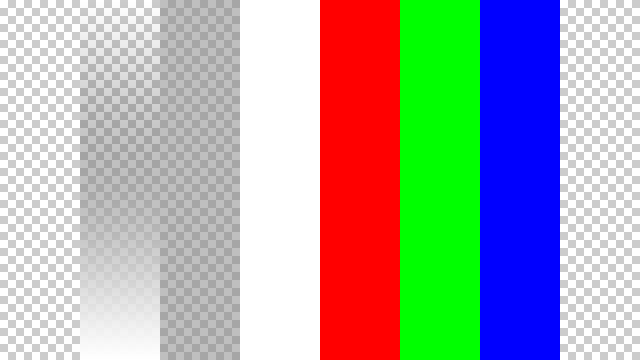
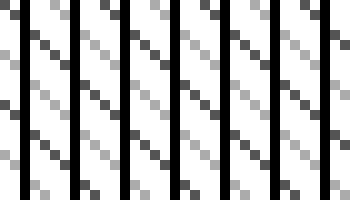
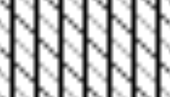

Опції¶
Зображення -- Image¶
На панелі «Зображення» -- Image ми повідомляємо Blender, який файл джерела використовувати.
- Зображення -- Image
- Для зображення Меню блоку даних. Про опції дивіться Устави Зображення -- Image Settings.
Відбір Зображення -- Image Sampling¶
На панелі «Відбір Зображення» -- Image Sampling ми можемо керувати тим, як інформація отримується із зображення.
Панель «Відбір Зображення» -- Image Sampling.
- Альфа -- Alpha
Опції, що стосуються прозорості.
- Вживання -- Use
- Used the alpha channel information stored in the image. Where the alpha value in the image is less than 1.0, the object will be partially transparent and things behind it will be visible. Works with files like PNG and TGA that can save transparency information. The Use Alpha in the Image panel must be enabled.
- Розрахування -- Calculate
Розраховує альфа на основі значень RGB зображення. Чорний (0, 0, 0) -- це прозорість, білий (1, 1, 1) -- безпрозорість. Вмикайте цю опцію, якщо зображеннєва текстура є маскою. Зауважте, що маскові зображення можуть використовувати відтінки сірого, що передають напівпрозорість, як у прикладах з привидами, полум'ям та димом/туманом.
The image with various alpha and gray-scale values.¶ Image with Use alpha. The alpha values of the pixels are evaluated.
Image with Calculate alpha only, Use Alpha in the Image panel is disabled.
- Інвертування -- Invert
- Розвертає значення альфа. Використовуйте цю опцію, якщо маскове зображення має білий там, де ви хочете, щоб була прозорість, і навпаки.
- Перевернути Вісь Х/Y -- Flip X/Y Axis
- Обертає зображення на 90 градусів проти годинникової стрілки при рендерингу.
- Карта Нормалей -- Normal Map
Це повідомляє Blender'у, що дане зображення повинно використовуватися для створення ілюзії горбкуватої поверхні, причому, кожен з трьох каналів RGB керує тим, як імітується тінь від нерівності поверхні. Потребує спеціально підготовлених увідних картинок. Дивіться детальніше тут -- Bump and Normal Maps.
- Простір Карти Нормалей -- Normal Map Space:
- Дотично -- Tangent
- Об'єкт -- Object
- Світ -- World
- Камера -- Camera
- Карта Похідних -- Derivative Map
- Використовує червоний і зелений як похідні значення.
- Карта MIP -- MIP Map
Mip-maps are precalculated, smaller, filtered textures for a certain size. A series of pictures is generated, each half the size of the former one. This optimizes the filtering process. By default, this option is enabled and speeds up rendering (especially useful in the Game Engine). When this option is OFF, you generally get a sharper image, but this can significantly increase calculation time if the filter dimension (see below) becomes large. Without mip-maps you may get varying pictures from slightly different camera angles, when the textures become very small. This would be noticeable in an animation.
- Фільтр Гауса Карти MIP -- MIP Map Gaussian filter
- Used in conjunction with mip-mapping, it enables the mip-map to be made smaller based on color similarities. In the Game Engine, you want your textures, especially your mip-map textures, to be as small as possible to increase rendering speed and frame rate.
- Інтерполяція -- Interpolation
This option interpolates the pixels of an image. This becomes visible when you enlarge the picture. By default, this option is on. Turn this option off to keep the individual pixels visible and if they are correctly anti-aliased. This last feature is useful for regular patterns, such as lines and tiles; they remain 'sharp' even when enlarged considerably. Turn this image off if you are using digital photos to preserve crispness.
Enlarged Image texture without Interpolation.
Enlarged Image texture with Interpolation.
- Фільтр -- Filter
The filter size used in rendering, and also by the options Mip Map and Interpolation. If you notice gray lines or outlines around the textured object, particularly where the image is transparent, turn this value down from 1.0 to 0.1 or so.
- Тип Фільтру Текстури -- Texture Filter Type
Фільтр текстури для використання при відборі зображення. Так само, як англійською pixel (піксель) представляє pic ture el ement (елемент картинки), texel (тексель) представляє tex ture el ement (елемент текстури). Коли текстура (простір 2D текстури) розкладається на 3D модель (простір 3D моделі), можуть бути використані різні алгоритми для обчислення значення для кожного пікселя на основі вибірок з різних текселів.
- Коробка -- Box
- A fast and simple nearest-neighbor interpolation known as Monte Carlo integration.
- EWA (Elliptical Weighted Average -- Еліптичне Виважене Усереднення)
Один з найбільш ефективних прямих алгоритмів згортання, розроблений Полом Хекбертом -- Paul Heckbert та Недом Гріном -- Ned Greene у 1980-х. Для кожного текселя EWA вибирає, виважує та акумулює текселі у межах еліптичного сліду і далі ділить результат на суму вагомостей.
- Ексцентриситет -- Eccentricity
- Максимальна ексцентричність. Вищі значення дають менше розмиву на віддалених/похилих кутах, але уповільнюють обробку.
- FELINE (Fast Elliptical Lines -- Швидкі Еліптичні Лінії)
Використовує кілька ізотропних проб у кількох точках уздовж лінії у просторі текстури для продукування анізотропного фільтру з метою скорочення артефактів ступінчатості без значного збільшення часу рендерингу.
- Проби -- Probes
- Кількість використовуваних проб. Цілочислове значення між 1 та 256. Детальніше: McCormack, J; Farkas, KI; Perry, R; Jouppi, NP (1999) Simple and Table Feline: Fast Elliptical Lines for Anisotropic Texture Mapping, WRL
- Область -- Area
Область фільтра, що використовується для відбору зображення.
- Ексцентриситет -- Eccentricity
- Максимальна ексцентричність. Вищі значення дають менше розмиву на віддалених/похилих кутах, але уповільнюють обробку.
- Розмір Фільтра -- Filter Size
- Розмір фільтра, що використовується MIP Map та Interpolation.
- Мінімум Розміру Фільтра -- Minimum Filter Size
- Використовує Filter Size як мінімальне значення фільтрування у пікселях.
{kind=link}
{kind=link}
{kind=link}
{kind=link}
Розкладка Зображення -- Image Mapping¶
Панель «Розкладка Зображення» -- Image Mapping.
На панелі Image Mapping ми можемо керувати тим, як зображення розкладається або проектується на 3D модель.
- Розширення -- Extension
- Розшир -- Extend
- Поза межами зображення кольори країв розширюються.
- Відсік -- Clip
- Відсікає розмір зображення та задає зовнішні пікселі як прозорі. Поза межами зображення повертається значення альфа як 0.0. Це дозволяє вам «вставляти» маленький логотип на великий об'єкт.
- Відсік Кубом -- Clip Cube
- Відсікає область кубічної форми навколо зображень та задає зовнішні пікселі як прозорі. Так само як при Clip, але тепер також обчислюється координата 'Z'. Значення 0.0 для альфа повертається поза межами області кубічної форми навколо зображення.
- Повтор -- Repeat
Зображення повторюється горизонтально та вертикально.
- Повтор -- Repeat
- Множник повторення по X/Y.
- Дзеркалення -- Mirror
- Дзеркалить зображення по осях X/Y. Ці кнопки дозволяють вам розкладати текстуру як дзеркалене або автоматично перевернуте зображення у відповідно X та/або Y напрямках.
- Шахівниця -- Checker
Розширює текстуру у швидко зробленому шаховому порядку. Ви можете використовувати також устави Size на панелі Mapping для створення бажаної кількості шахівниць.
- Even/Odd
- Вмикає парні/непарні плитки.
- Відстань -- Distance
- Управляє відстанню між плитками шахівниці у частині розміру текстури.
- Мінімум Обрізки -- Crop Minimum / Максимум Обрізки -- Crop Maximum
- Зсув та розмір текстури відносно простору текстури. Пікселі поза цим простором ігноруються. Використовуйте їх для обрізки або вибору частини великого зображення для використання як текстури.